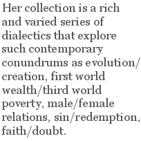

Reading Rose Kelleher’s new prize-winning collection Bundle of Tinder (Anthony Hecht Poetry Prize judged by Richard Wilbur), I find myself thinking of my college philosophy class, in which my teacher, Dr. Howe assigned Plato’s Republic. Being a product of the 1970s, I was easily caught up in the concept of building a perfect society, but even more so with the dichotomy of illusion and reality in “The Allegory of the Cave.” A good deal of my adolescence I had the uneasy sense that life in America was a fraud, that all my parents, teachers, and society in general was buying into was nothing more than a cheap material illusion. Of course, much as I wanted to burst that bubble — to live outside of any uncomfortable material obligations, I found it impossible. Like many of my generation, I have a certain peace over the material, which, in the sense of Hegelian dialectic, looks like this: thesis (I wanted to drop out and live on a commune); antithesis (the forces of capitalism had other plans in mind); synthesis (out of necessity, I have learned to negotiate the borderline between social resistance and a paycheck).
Kelleher’s collection reveals similar feints at resolving the unresolvable. Her collection is a rich and varied series of dialectics that explore such contemporary conundrums as evolution/creation, first world wealth/third world poverty, male/female relations, sin/redemption, faith/doubt. The insights of the dividing lines are reinforced with an energetic use of form and language. Unlike so many of her contemporary peers who would free themselves of the stodginess of form but often devolve into self-involved sloppiness or mere confession, Kelleher’s work finds its footing (pun intended) in the compression of form, line length, and syntax. As Richard Wilbur notes in the Foreword, her “poems are everywhere the work of a sharp intelligence, a good heart, and a great technical gift…” Too, one might add, a wickedly wry sense of humor.
The book almost immediately calls upon us to probe its seemingly simple surface. Even its seemingly straightforward divisions into five sections — God, Science, People, Perversity, and Love — are invitations to probe the surface. In the opening section, she is both cynical of religion on one hand (as in her attack, “The Rectangle”, on the Catholic church’s ineptitude in dealing with priests who molested their young parishioners) while on the other hand embracing earlier traditions of the goddess as mother in her poem “Guadalupe”, in which she connects the Virgin of Guadalupe with the Aztec tradition: “Guadalupe, hear my prayer,/ be you saint or Aztec goddess,/ heal the earth, cast out the darkness./ Evil times are now upon us.” Kelleher even shows us her own doubts about God in her poem “Lourdes”, in which she criticizes God for not performing miracles more ubiquitously, stridently calling upon the Almighty to
… Go
to battlefields and seek us out.
Hurry, before the bodies start to smell.
Repack that soldier’s brains inside his skull
Cure my doubt.
In the end, Kelleher cannot resolve her skepticism of traditional Christianity; thus, in
“Penal Rosary” she ends the section by reminding us that “Our penance is to learn what to unlearn/ and, having come full circle, start again.” This is much the same in her “Rays at Cape Hatteras”, in which she describes how cownose rays “flip themselves like flapjacks over pans/ of Carolina surf.” Yet ultimately “Their flight is brief/ and clumsy, evolution having cursed/ these would-be herons with the flesh of fish: rude fliers in the face of disbelief.”
Yet elsewhere she finds a way through in resolving thorny dialectical problems. For instance, in her contemporary sonnet “The First Uprising”, Kelleher explores the problem of human origin. Here early humans are first apes scrambling around on all four, and the fall is ironically enough Eve’s act of standing upright, reaching up and plucking “the ripest one [a plum]./ Her brothers watch with envy till they learn/ her trick of rearing up; then they compete,/ tottering on their hind legs as they eat.” Thus, “With height, enlightenment.” Or in her poems “At Sea” and “Noted Sadomasochists” she works her way around an idea from a variety of perspectives — so that, like a cubist painting — she finds insights that are larger than the individual narratives.
Elsewhere, particularly when the dialectic is troubling, what emerges is a keen sense of black humor (and her best work), such as in “The Hybrid.” Here Kelleher toys with the idea of how corporations are experimenting with new biological technologies that may ultimately emerge as cloning or the like. In this particularly wry poem, the result of the experiment is half human, half animal. She notes “We gave him human hands/ and brain enough so that he understands/ how to assemble circuit boards. He works/ because he must…” Darkly, she ends by both laughing and warning us that “The market will decide if that makes sense./ And when they’re plump enough, they’ll taste divine/ with the right wine.” Elsewhere this takes an even more compressed form, as in “What She Sees in Him.” In this poem we meet a woman considering the double-edged nature of love, and we can easily sense her making a list of pros and cons about this man:
both the proposal
and the pose
the alabaster
and the rose…
and later, considering that pose,
the iron chain
its weakest link
both the armor
and the chink
She even has the temerity to construct a poem entitled “The Poet Who Will Win This Competition” in which she describes this winning female poet who “studied Latin and Greek, and lets us know./ Doesn’t need to Google ‘Philoctetes’./ Was born approximately thirty years ago”. The beauty of this work is that not only does it make us laugh at this prim prize-winning poet, but it also winds up telling us a great deal about Kelleher herself — and allows us to take her side in this competition.
Ultimately Kelleher’s collection finds its strength in just this sort of compression, insight, and black humor. And if she’s not able to resolve every dichotomy that she presents us with — all the better. For in fingering those contradictions, she pushes us to probe the surface of our own lives and the difficult problems we encounter: and what better time spent than that? I’m sure Plato would have approved.
David Holper is a Professor of English at College of the Redwoods in Eureka, California. He has an MFA from the University of Massachusetts at Amherst and has published fiction and poems in various journals, including Grand Street, the New Virginia Review, Third Wednesday, Northcoast Journal, Main Channel Voices, Cherry Blossom Review, Language and Culture, Hot Metal Press, and Inside English. He has a chapbook of poetry, 64 Questions, coming out soon with March Street Press.